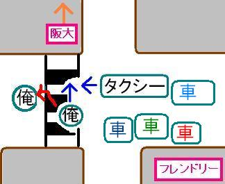
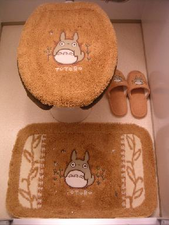
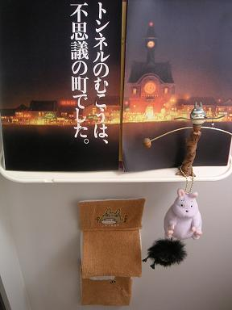

日々、想ふ
〜過去感じたことがつれづれと〜
（できるだけ最大化してお読みください）
一覧へ
命拾い。１/１５
今日はタクシー会社と話し合い、タケユキです。
話し合いは３０分くらいで早く終わったんですが、
これからいろいろと処理が大変そう。
この話はこの事件が一段落したら
想ひ出にでも載せようかと思ってます。
それと昨日行ったクラスの新年会ですが、
タクシーにはねられたという事件が起きた数時間後にもかぎらず
すでに
それをネタに宴会を我が物にしようと
思っていたことを
正直に白状しようと思います。
人間って強い。
今日の判明したこと：さようなら、愛車（全損により廃車決定）。
事故。１/１４
タクシーにはねられた、タケユキです。
そんなわけと今から新年会あるので今日の日記は
とりあえずこんくらいで。
今日の事故：こんな感じだったと思う。

強く、生きる。１/１３
国民投票。１/１２
今日バイト先でバイトの高校生に
「初めて見たとき二十歳過ぎのだらだらフリーターやってる人だと思ってました」
そう言われた。
昨日は同じ学科の人に、
「成人式行かんの？」
そんな風味のことを言われた。
すこぶる納得が行きません、俺はまだ１９です、タケユキです。
これほどの（どれほど？）若々しさに誰も気付いていない模様、
というわけでちょっとここでアンケートをとります。
議題は
「ここのホームページはどんな形式にすべきか」です。
「冒頭部分全然関係ないのかよ！」って一人二人思ったかもしれません、
あれはただの前座だ、前座。
前フリとは違うわけよ、違いの分かる男になれ、お前ら。
それでアンケート内容ってのはいたってシンプルで、
トップページ（ここ）にその日の日記を載せるべきか、
それとも以前のようにトップページはコンテンツのみで行くべきか、
この辺
一人で考えても結論でないのでアンケートとることにしました。
投票は
ここでお願いします。
「読者と共に作るホームページ」がコンセプトの

をみなさん改めてよろしく。
今日の日記：今日からコンセプトはそれで。
ホームセンター。１/１１
今午前３時半、眠い（当たり前）、タケユキです。
っつーことで今日は短めで。
課題終わらないって言ってたけど、
やっぱりいまだ終わらずそれをほっといて家具作りに精を出してます。
昨日使った水性ペンキはノリが悪いので
朝ホームセンターに行ってオレンジのスプレーを購入、
帰宅後、下にひく新聞紙とかのいらない紙がないことに
気付いて再度ホームセンターへ。
帰宅後、その新聞紙をつなぐガムテープがないことに
気付いて再々度
ホームセンターへ。
一日に３回もホームセンター行ってた。
今日の感想：これで俺もホームセンターマスター。
塗装。１/１０
近いうちまたマギーの耳探しに行きます、タケユキです。
未提出の課題がありながらも
オレンジのペンキ買ってきて
家具のイメージ一新を目指してました。
夕方からバイトあったんでちゃんと汚れないように
ペンキがついても困らない服着て軍手して
完全防備、そう思いながらペンキ塗ってました。
それから時間きたので中断してバイトへ。
どっかペンキついてたりするかと思ったけど
バイトの人は何も言わなかったんで大丈夫だと思ってました。
それでバイト終わって着替える時、
「タケユキ君その顔のオレンジは何？」
・・・
・・・・
・・・・・・みなさん、ペンキ使う時は目出し帽が
必要です。
それにしてもバイト終わるまで何も言わないなんてちょっとひどい、
なんですぐ教えてくれなかったのかと聞いたら、
「だってニンジンだと思ってたもん」
今日の突っ込み：ニンジンかペンキかという問題ではない。
絶対的存在？１/９
とある人からのリクエストに応えて再度公開、

画像右の坊ネズミの下にぶらさがってる黒いのは
真っ黒クロスケじゃなくてススワタリ（千と千尋の神隠し）、
手足があるのが見極めのポイントです、タケユキです。
今日今年最初の塾講のバイト行ってきました。
そしたら授業する後ろで中学生らしき子が自習してたんです。
その子が前ノート使い切って困ってたときにルーズリーフあげたことが
あったんですが今日その子が、
「あ、あの、よかったら食べてください」
そう言ってガムくれた。
中学生とかからはタメ口もしくはそれ以下が基本の
俺だったんですがその子には俺がすごい人に見えるみたい、
なんか緊張してたっぽい、俺なんかと話すだけなのに。
それから高校生の授業始めて、その中学生もまた後ろで自習再開。
数Ⅱの対数のところを説明してたんです、
ホワイトボードに'log'とか書いて。
まだこの範囲入ったばかりなんで簡単なとこだったんで、
「ここらへんはまだ大丈夫、公式どおりやるだけだし」
みたいな感じにさらっと言ってたら後ろにいたその中学生、
まるで俺を神かのごとく見てた。
ってか口開いてた、唖然とはまさにこのこと、みたいな感じに。
そりゃ中学生にとっては数学なのに'log'なんて言葉が
出てくること自体意味不明だろうに。
たまにはこういう視線もいいもんだと思った。
今日の俺：たぶんその時後光射してた。
理想の部屋。１/８
一限寝坊で自主休講、二限ずっと寝てて起きたら教室俺一人、
午後は授業ないので昼帰宅、
俺は何しに学校へ？タケユキです。
そんでもって夕方からはバイト、
ちょっとこのダメかげんは学生としてやばいのでは？
そんな気がしすぎです。
あと１ヶ月弱でテストの時期だから
今まで勉強してない分そろそろ始めんといけんとも思うけど
今度は板でも買ってきて自分で棚とか家具作ろうかと思案中、
この間違った方向に延びとるベクトルをどうにかせんといけません。
でも周りに俺を正してくれる人などおるわけもなく、
むしろ夜４時近くまでマリオカート一緒にやる人とか、
せっかくだしてやったココアをこたつ布団にこぼす人とか
間違ったベクトルをさらにあらぬ方向に伸ばしてくれる人しかいないという状態。
ココアって言ったらそうそう、昨日やっとやかん買った。
一人暮らし１０ヶ月目にして初やかん。
昨日
耳買えなかったせつなさをやかんでフォローしてたわけで。
今まで鍋でお茶沸かしたりココア飲んでたわけですが、
これで台所周りも完璧、家具もこれから完璧、
密かに狙ってた「帰るのが楽しくなるような部屋」の完成まであと少し、
そう心躍らせながら今こたつに入りキーボード叩いてるわけですが、
気のせいか
こたつがなんか焦げ臭いんですけど・・。
今日の不安：
家事火事とかならねえよな？（汗）
キモリアル。１/７
今年最初の授業が補講ってどういうことよ？タケユキです。
いきなりですがマギー審司って芸人知ってますか？
動物のぬいぐるみを生きてるかのごとく動かしたり
「耳がおっきくなっちゃった」って耳おっきくする人。
地元帰ってる時に友達が「
東急ハンズでマギー審司の耳見つけた」って
言ってたんで
ロフトにもあるだろうと一昨日寄ってみたら、
見つけました、マギーの耳。
でもテレビで見てるのと違い目の前にその大きな耳を見ると
微妙にキモかったわけです。
現実（リアル）に見るとキモかったわけです。
そう、
キモリアルだったわけです。あまりのそのキモリアルさに買うのをためらいその日は帰宅、
しかし！決意を固めること二日、ついに購入を決意、
勇気を胸にロフトのパーティグッズコーナーへ。
売り切れ（涙）
今日学んだこと：耳って意外と人気らしい。
青春切符。１/６
会え〜なくなってどれくらい〜経つのでしょう♪
出し〜た手紙も〜今朝ポストに〜まいもどった、タケユキです（「ひだまりの詩」より）。
年末の帰省には京都の友達と青春１８切符なるもので帰省しました。
この青春１８切符っていうのは５回分が１１５００円で、
１回分（２３００円分）で一日JR電車乗り放題とはたから聞くと
めっちゃ都合のいい切符なんですが、
使用期間が限定されててしかも一枚の切符で５回分という
人と同行程でないと真価を発揮できない内心微妙な切符なわけです。
そういう切符なわけで先に大阪に戻ってきた俺はその友達に
１８切符を郵送しなければならなかったわけです。
大阪来てその日にポストに投函、
ギリギリ間に合うかなと思ってたら
料金不足で戻ってきた（汗）
・・・
・・・・
・・・・・・
今朝ポストに〜まいもどった〜♪
ごめんよ、
友人。
今日の手：水仕事で手が荒れまくり、心のケアが超必要。
年明けから。１/５
違うんです、
別に「いつ大阪戻るかわからんだろうから更新さぼったれ」
そんなふざけた気持ちで更新さぼったわけじゃありません、
ただ
ダブルダッシュ買ってしまっただけなんです。
ソフトだけでなくゲームキューブ本体も衝動買い、
年明けから間違った方向に暴走中、タケユキです。
改めて、明けましておめでとうございます。
今日レストランのバイトの方が仕事初めで、
客は新年会の団体客。その仕事場で今までにない注文を受けた。
注文聞いたときびっくりした、ってかびびった。
なによ
カシスオレンジ１６杯って。
いくらなんでも多すぎっしょ、
一人が頼んだら「俺も」「あたしも」
いつの間にか１６杯。
頼むから少し店員の気持ちも考えてくれ。
今日の不満：お前の酒じゃないのに「ええやんか」って
お盆から取っていくのはやめてくれ。